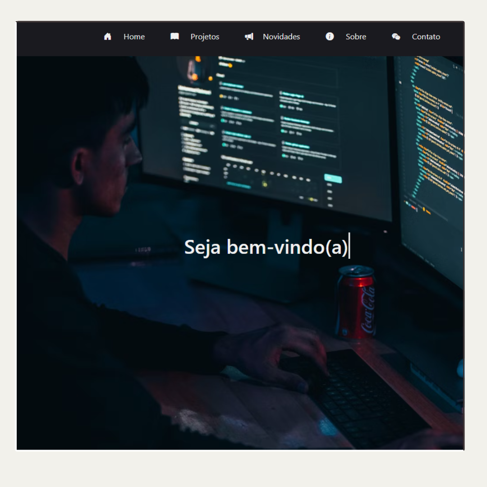
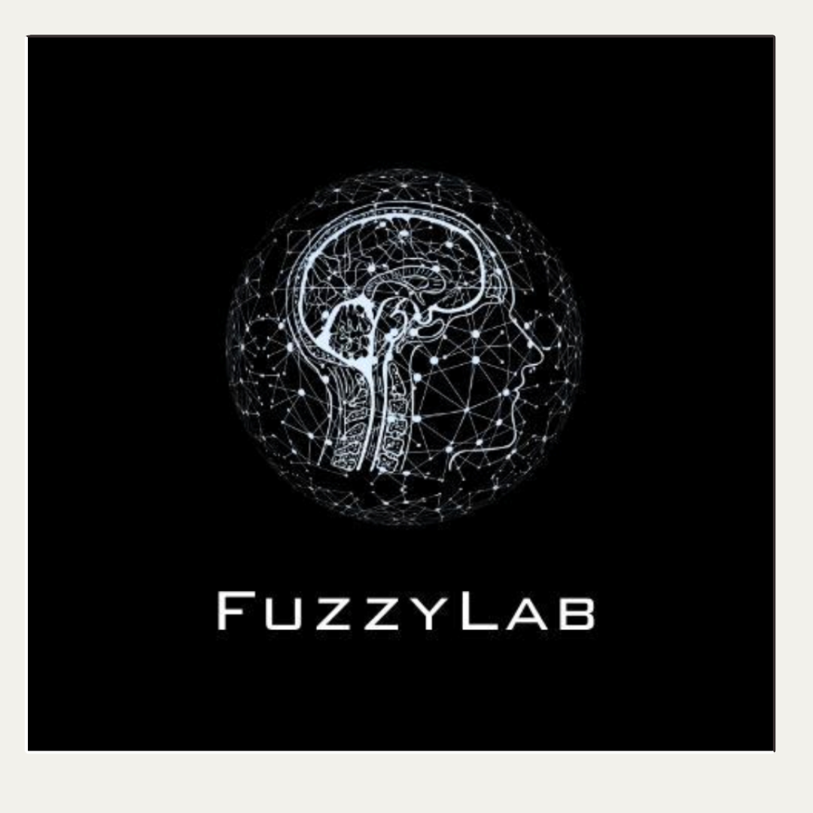

Meu primeiro projeto:
Este site que você está navegando neste exato momento, é meu primeiro projeto de ciências da computação, tive algumas dificuldades no processo mas nada fora do habitual, tudo é dificíl no começo, enfim, sempre amei criar coisas, então meu sentimento atualmente não seria diferente!

Fiz minha primeira Automação:
Rescentemente também consegui entrar no laboratório de projetos extensivos da faculdade, lá estou aprendendo sobre muitas coisas novas, e amplicando meus horizontes e pespectivas em relação ao futuro, atualmente fique responsavél por criar uma pequena automação para integrar em um projeto de captura de dados com python e web scraping!